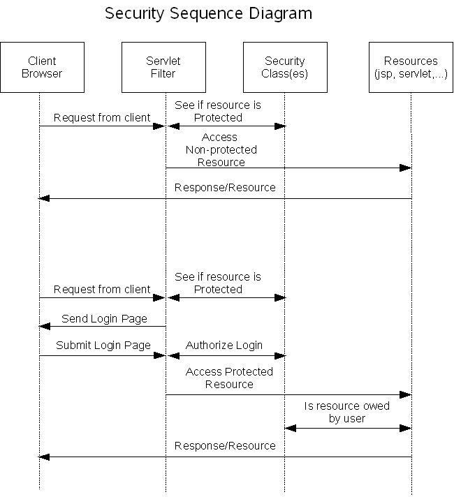
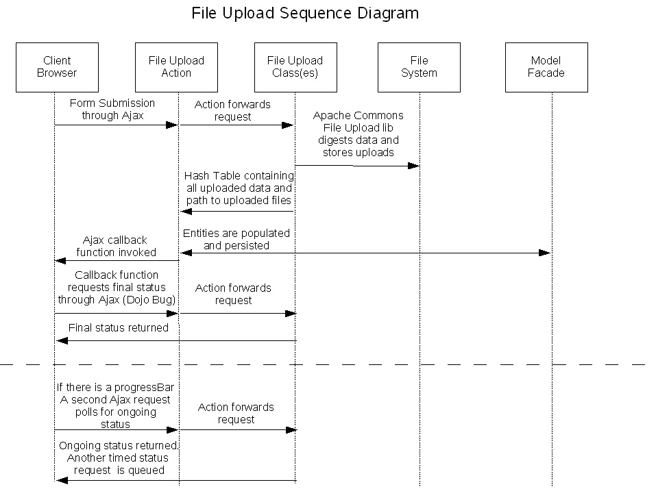

Architecture Document
Security
The first thing we tried is to use the form based login functionality
that is available from the web container. After prototyping the
functionality, we found that the model was lacking do to the fact that
you could only trigger the login page if you accessed a protected
resource. One of our goals was to provide a more vibrant
user experience and use Ajax functionality to facilitate the login
whether accessing a protected resource or not. We tried using a
iframe to help trigger the web container to allow a form to be
submitted to j-security-check, but this was problematic when
considering how to handle an invalid login due to browser
incompatibilities when accessing an ifame's resultant document. Talking
with our web container team, they told me that a login api will be part
of the next revision of the servlet specification and be in Java EE
6. If the login api was available we would have been able to
utilize the form based login.
We decided to use full programmatic security that is implemented in the
form of a servlet filter intercepting each request. The request's
URI will be compared with a preset data set to determine whether the
resource is protected or not. We will also use groups to
determine whether a user is an administrator or not. If the user
is an administrator, they can edit any information in case
inappropriate items have been submitted. There will also be a
third level of authentication to verify that the user has rights to
edit/update the object.

There are two scenarios we need to cover. When a non-protected
resource is being access and when a protected resource is access.
For this purpose a resource is a jsp or servlet that is accessed
through a URI. The URI is what is marked as protected or
not. The two scenarios that are shown above in the sequence
diagram is as follows:
Accessing a non-protected resource:
- The resource is requested
- The entryFilter uses the security class(es) to check if the
resource is protected
- The entryFilter continues to serve the request
Accessing a protected resource:
- The resource is requested
- The entryFilter uses the security class(es) to check if the
resource is protected
- If the user isn't logged in then the login.jsp page is returned
to the user with a hidden field that holds the original URI of the
request.
- The login information is submitted, the entryFilter uses the
security class(es) to verify the login information. If the
information is valid then the request continues. If the
information is invalid then the login.jsp page is presented again
showing and appropriate error and allows the user to try to login again.
- The target resource can optionally use the security class(es) to
verify that the person logged in has rights to alter the object.
This could happen in the case where and event or personal data is being
edited. If the logged in user doesn't have access to the object,
then the error page is shown to the user. If the user does have
access
to the object then the request continues. Also, the create,
update and delete actions have to be protected.
Ajax Interactions:
The Ajax interactions with the server needed to take into account that
the client controls the processing. If a user submits an Ajax
request that violates the security constraints the client will have to
forward the user to the login page. The login page still comes
back as the response, but the XMLHttpRequest doesn't operate like a
regular browser and doesn't render the returned page. The fact
that the login page is returned should circumvent any one trying to
hack the application by submitting a request directly to the
ControllerServlet because the request will not be accepted and the
login page will be displayed. For the XMLHttpRequest handling a
"NeedLogin" Response Header was added for performance reasons so
the response data wouldn't have to be parsed. For example, to
submit an attendee to an event, the user has to be logged in, if not,
the entryFilter will use the security classes to determine that the url
is protected, that the user isn't logged in and then set the response
header and return the login page. The code below depicts the
client side code that looks for the response header and forwards the
user to the login page as expected.
function addAttendeeCallback(type, data, evt) {
// check successful response
if (evt.readyState == 4) {
if (evt.status == 200) {
if(evt.getResponseHeader("NeedLogin")) {
window.location="${pageContext.request.contextPath}/login.jsp?accessingURL=" +
escape("/eventDetail.jsp?socialEventID=" + ${socialEvent.socialEventID});
} else {
// process dojo ajax response
The sequence diagram below shows the actual interactions, step by step:

Protecting Artifacts:
When considering protecting uploaded artifacts to be accessed by a
user's list of friends, the artifact will need to be able to be
identified without hitting the database for performance reasons.
If not, every uploaded artifact will need to access the database to see
if it is protected. A special access URI for the protected
artifacts would be a logically choice. For example, unprotected
artifacts could be stored directly in the "artifact" directory and
protected artifacts could be stored in the "artifact/protected"
directory. This way we will have to restrict the artifacts that
have "/protected" on the URI. Restricting a resource will include
making sure the accessors is logged in and that the person is in the
submitters list of friends.
If we also provide the functionality to allow a submitter to restrict
events to be only visible by the friends list, we will need to add a
column to the event object to track this information. Also,
before the request to view the event is served, the action/page will
have to make sure the user is logged in and is part of the submitters
friends list.
Fileupload
The fileupload approach is a version taken from the JavaServer Faces
(JSF) component that exists in the BluePrints Solutions Catalog.
The fileupload utilizes the Apache Commons FileUpload libraries to
digest the multi-part mime data that is uploaded from a HTML form
submission with a encoding type of "multipart/form-data". The
idea was to use as much of the existing code as possible and create a
re-usable library for developers who didn't want to use JSF.
Since the all the entries submitted in the form are encoded in
multi-mime format, a mechanism needed to be devised so a developer
could access the digested data to perform custom operations like
persistence. The mechanism also had to be versatile to
accommodate varying data type that could be submitted in a HTML
form. For this reason a Hashtable was used to store the data that
is submitted in the form, which is returned to the developer so custom
operations could be performed. The key to the Hashtable is the
name of the input field being submitted and the value of the
Hashtable is the value string of the submission. This approach
follows the same methodology as the ServletRequest uses with the
getParameter method. If any fields with the type of "file" are
submitted then there is an additional entry added to the
Hashtable. One with the key of the field name and the value of
the file being uploaded and another with the key of the field name
concatenated with
com.sun.javaee.blueprints.webapp.fileupload.FileUploadUtil.FILE_LOCATION_KEY,
this value is set to the fully qualified path of the file on
disk. This Hashtable is returned from the
FileUploadHandler.handleFileUpload Method and is to be used by the
developer to implement custom functionality like persistence.
The fileupload classes also have an interface for monitoring the upload
that is in progress. These method formulates a XML document that
is sent in the response of the request for status. If an Object version
of the status is required a session Object of type
com.sun.javaee.blueprints.webapp.fileupload.FileUploadStatus is
available under the key
com.sun.javaee.blueprints.webapp.fileupload.FileUploadUtil.FILE_UPLOAD_STATUS
while the download is progressing.
Accompanying the fileupload's server side classes is a Javascript
library that facilitates the submission of the form, polling of the
status to update a progress bar and the submitting of the final
request for status. To compensate for a Dojo component bug where
the response of the Ajax request submitting the form can't be
consistently read depending on the browser that the person is using, a
second Ajax request is sent to get the final status of the upload once
the upload has completed. This second request is initiated from
the Ajax callback function of the Ajax request. submitting the form.

The fileupload sequence depicted above that the application uses is as
follow:
- An Ajax request encoded in multi-part mime format is sent to the
entities specific fileupload action.
- The action forwards the request to the fileupload classes.
- The fileupload classes digest the uploaded data using Apache's
Commons Fileupload libraries
- A Hashtable of uploaded data is returned to the action and it is
used to update the database using the ModelFacade
- The request is finished and no response is returned.
- The Ajax request's callback function is invoked and another Ajax
request is sent to get the final status if the upload.
- The action forwards the request to the fileupload classes
- A XML document is returned in the response and optionally,
presented to the user.
During the above interaction, a second Ajax request is polling for
status if a progress bar is enabled using the fileupload's client
libraries. The interaction is as follows:
- An Ajax request is sent to the specific entities action classes
- The action forwards the request to the fileupload classes.
- A XML document is returned in the response and the progress bar
is updated
- When the above interaction finishes, this polling is discontinued
and the progress bar is hidden
Event Persistance
Persisting Events to the database has to take into account that
data/times need to be displayed in a user's timezone. To fulfill
this requirement, we stored the date/time of the event in a
java.sql.timestamp converted to the UTC (GMT) timezone. This way
all stored dates are in the same timezone. When the timestamps
are display in a web page, the "http://java.sun.com/jsp/jstl/fmt" tag
library can be used to diplay the timestamp in its proper format, for
example:
<fmt:formatDate dateStyle="full" timeStyle="full"
type="both" value="${socialEvent.eventTimestamp}"
timeZone="${param['timezone']}"/><br/>
The timestamp of when the event was created will also be stored for
sorting purposes.
Adding Attendees:
To add attendees to an event a button is used that invokes an Ajax
request to the EventRestAction. Since the action is protected,
the user must first be logged in, to be able to submit the
request. The button to add an attendee is only shown if the user
is logged in and isn't already listed as an attendee to the
event. Once the attendee button is click an Ajax request is sent
to the server with the response being a JSON object that is populated
with all the attendees of the event. So in the case where
multiple people add themselves after your eventDetail page is rendered,
the list will be updated to reflect the current list of attendees.